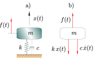
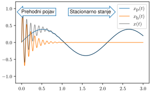
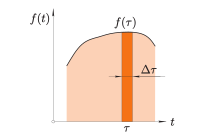

4. Linearni časovno invariantni sistemi z eno prostostno stopnjo#
Sistema z eno prostostno stopnjo (ang. single degree of freedom system - SDOF, slika spodaj) lahko opišemo z nehomogeno navadno diferencialno enačbo drugega reda:

kjer je \(f(t)\) vzbujevalna sila. Rešitev nehomogene enačbe je v obliki:
kjer je \(x_{h}\) homogena rešitev in \(x_{p}\) partikularna rešitev.
Prosti odziv (homogena rešitev)#
Če vzbujevalne sile ni, \(f(t)=0\), je homogena rešitev pridobljena iz:
Uporabimo nastavek za rešitev \(x_{h}(t)\):
kjer sta amplituda premika \(X_{h}\) in lastna vrednost \(\lambda\) neznani (in ju je treba določiti). Vstavimo nastavek v diferencialno enačbo:
Izraz uredimo:
Netrivialno (\(X_{h}\,\mathrm{e}^{\lambda \,t}\neq0\)) rešitev določimo na podlagi karakteristične enačbe:
Rešitev karakteristične enačbe je:
kjer sta \(\lambda_{1,2}\) lastni vrednosti sistema (v splošnem kompleksno število).
Glede na razmerje med vztrajnostno, elastično in dušilno silo je rešitev:
nadkritično dušeno: če sile dušenja prevladajo nad vztrajnostnimi in prožnostnimi sile (\(c^2\geq 4\,k\,m\)),
kritično dušeno: če so sile dušenja enake vztrajnostnim in prožnostnim silam (\(c^2=4\,k\,m\)),
podkritično dušeno: če vztrajnostne in prožnostne sile prevladajo nad dušilnimi (\(c^2\leq 4\,k\,m\)).
V primeru nadkritično in kritično dušenega sistema je rešitev v realni obliki in gibanje ni oscilatorno.
V okviru te knjige se osredotočamo na podkritično dušen primer, ko so kompleksne lastne vrednosti konjugirani pari. Masa \(m\), dušenje \(c\) in togost \(k\) pa definirajo nedušeno lastno krožno frekvenco (tudi resonančna frekvenca, lastna frekvenca):
Tukaj je pomembno spomniti (glejte osnovne predmete na temo dinamike in mehanskih nihanj), da pri linearnih sistemih prednapetje ne spremeni lastne frekvence.
Dušenje je mogoče definirati s pomočjo razmernika dušenja:
kjer je:
kritično dušenje.
S pomočjo nedušene lastne frekvence \(\omega_0\) in razmernika dušenja \(\delta\) lahko homogeno diferencialno enačbo preoblikujemo v standardno obliko:
Nadalje \(\omega_0\) in \(\delta\) vstavimo v izraz za lastne vrednosti:
kjer se:
imenuje dušena lastna krožna frekvenca (pravilno jo označimo z \(\omega_{0,d}\), vendar tukaj zaradi zapisa v kodi, spodaj, uporabimo kratko obliko).
Izpeljane lastne vrednosti vstavimo v nastavek za homogeno rešitev \(x_{h}(t)\). Ker imamo dve lastni vrednosti, je splošna rešitev linearna kombinacija obeh:
kjer sta konstanti \(X_{h,1}\) in \(X_{h,2}\) odvisni od začetnih pogojev.
Pri impulznem odzivu bomo gradili na začetnih pogojih, ko sistem izpustimo iz ravnotežja s hitrostjo različno od nič:
Rešitev začetnih pogojev predstavlja t.i. impulzno odzivno funkcijo.
Impulzna prenosna funkcija#
Opomba
Impulzna prenosna funkcija:
Odziv je sestavljen iz ovojnice \({\dot x_0}/{\omega_{d}}\,\exp(-\delta\, \omega_0\,t)\) in nihajočega dela \(\sin(\omega_{d}\,t)\), glejte sliko spodaj.
Show code cell source
import sympy as sym
t, ω_0, ω_d, d_x_0, δ= sym.symbols('t, \omega_0, \omega_d, d_x_0, \delta', real=True)
podatki = {ω_0: 1, d_x_0: 1, δ: 0.1}
ω_d = ω_0 * sym.sqrt(1-δ**2)
ovojnica = d_x_0/ω_d * sym.exp(-δ*ω_0*t)
x = ovojnica * sym.sin(ω_d*t)
p1 = sym.plot(ovojnica.subs(podatki), (t,0,50), line_color='C0', xlabel='$t$ [s]', ylabel='$x_h(t)$', title='Časovna domena',
label='Ovojnica', show=False)
p2 = sym.plot(x.subs(podatki), (t,0,50), line_color='C1',
label='$x_h(t)$', show=False)
p1.extend(p2)
p1.legend = True
p1.show()

Harmonsko vzbujanje#
Nadaljujemo z rešitvijo gibalne enačbe za primer harmonskega vzbujanja:
kjer je \(F\) amplituda sile (v splošnem kompleksna vrednost) in \(\omega\) krožna frekvenca vzbujanja.
Partikulano rešitev \(x_p(t)\) določimo iz enačbe:
tako, da predpostavimo harmonski odziv:
kjer je \(X_{p}\) neznana kompleksna amplituda partikularne komponente (včasih imenovana tudi fazor). Nadaljujemo z izpeljavo:
Netrivialna rešitev zahteva \(\mathrm{e}^{ \mathrm{i}\,\omega\,t}\neq 0\) in zato rešitev iščemo na podlagi enačbe:
kar vodi v določitev razmerja med odzivom \(X_p\) in vzbujanjem \(F\), kar imenujemo tudi frekvenčna prenosna funkcija \(\alpha(\omega)\):
Če izpostavimo \(1/k\), nato uporabimo \(\omega_0^2=k/m\), \(c=\delta\,c_c\), \(c_c=2\sqrt{k\,m}\) ter dodatno vpeljemo razmernik frekvenc \(r=\omega/\omega_0\), izpeljemo:
V nadaljevanju izpeljani izraz prikažemo grafično.
Show code cell source
import sympy as sym
r, δ, k= sym.symbols('r, \delta, k', real=True)
i = sym.I
α = 1/k/(1-r**2 + i*2*δ*r)
podatki = {k: 1, δ:0.1}
podatki2 = {k: 1, δ:0.5}
p1 = sym.plot(sym.Abs(α.subs(podatki)), (r,0,3), line_color='C0', xlabel='$r$ [\cdot]', ylabel='$|\\alpha(r)|$',
title=f'Amplituda frekvenčne prenosne funkcije',
label=f'$\\delta=${δ.subs(podatki):2.1f}', show=False)
p2 = sym.plot(sym.Abs(α.subs(podatki2)), (r,0,3), line_color='C1',
label=f'$\\delta=${δ.subs(podatki2):2.1f}', show=False)
p1.extend(p2)
p1.legend = True
p1.show()
p1 = sym.plot(sym.arg(α.subs(podatki)), (r,0,3), line_color='C0', xlabel='$r$ [\cdot]', ylabel='$\\angle\\alpha(\\omega)$',
title=f'Faza frekvenčne prenosne funkcije',
label=f'$\\delta=${δ.subs(podatki):2.1f}', show=False)
p2 = sym.plot(sym.arg(α.subs(podatki2)), (r,0,3), line_color='C1',
label=f'$\\delta=${δ.subs(podatki2):2.1f}', show=False)
p1.extend(p2)
p1.legend = True
p1.show()
Partikularna rešitev je torej:
Prehodni odziv in odziv v ustaljenem stanju.#
Najprej smo določili homogeno rešitev \(x_{h}(t)\), katera predstavlja prehodni odziv na neko začetno motnjo. Partikularna rešitev \(x_{p}(t)\) predstavlja rešitev na stacionarno harmonsko motnjo. Splošna rešitev je določena z vsoto obeh (slika spodaj).

Frekvečna prenosna funkcija#
Najprej se bomo osredotočili zgolj na partikularno rešitev (vendar ne bomo več uporabljali podpisa \(p\)):
Ker zgornji izraz predstavlja frekvenčni odziv, se imenuje frekvenčna prenosna funkcija (ang. Frequency Response Function, tudi FRF, glejte Povezava med frekvenčno in impulzno prenosno funkcijo za opis načina, kako se FRF dobi iz homogene rešitve:
Opomba
Frekvenčna prenosna funkcija:
Z uporabo nedušene laste krožne frekvence \(\omega_0^2=k/m\), razmernika dušenja \(\delta=c/(2\,\sqrt{k\,m})\) in razmernika frekvenc ali tudi relativne frekvence \(r=\omega/\omega_0\), dobimo frekvenčni odziv v standardni obliki:
\(\alpha(\omega)\) se imenuje frekvenčna prenosna funkcija ali bolj natančno dimenzijska frekvenčna prenosna funkcija (ang. dimensional frequency response function). V nasprotju z \(\alpha(\omega)\) je \(H_0(\omega)\) opredeljena kot:
in je v nekaterih knjigah (npr.: Géradin and Rixen [2015]) imenovana brezdimenzijska frekvenčna prenosna funkcija (ang. nondimensional frequency response function). V izrazu zgoraj je statični poves \(X_0\) zaradi statične sile \(F\) definiran kot:
Opomba
Harmonski odziv \(X(\omega)\) lahko z brezdimenzionalno frekvenčno prenosno funkcijo definiramo kot:
Oziroma:
S pomočjo frekvenčne prenosne funkcije je mogoče odziv stacionarnega stanja pri harmonskem vzbujanju s \(\omega_f\) opisati kot:
Različne oblike FRF#
Dimenzijski FRF je smiseln, saj je statični odklon \(X_0\) težko izmeriti in se pogosto merita vzbujevalna sila in odzivni pospešek. Namesto pospeška pogosto merimo še hitrost in pomik. Posledično obstajajo različne oblike frekvenčne prenosne funkcije:
Opomba
kjer \(\dot X(\omega)\) in \(\ddot X(\omega)\) označujejo kompleksni amplitudi hitrosti ali pospeška v frekvenčni domeni. Odziv različih oblik FRF je prikazan na sliki spodaj:
podajnost: podresonančno konvergira k statičnemu inverzu togosti \(1/k\), nadresonančno pa kvadratično konvergira proti nič,
pomičnost: podresonančno linearno konvergira k nič, nadresonančno linearno konvergira proti nič,
pospešenost: podresonančno kvadratično konvergira proti nič, nadresonančno konvergira k inverzu mase \(1/m\).
Show code cell source
import sympy as sym
ω, m, c, k= sym.symbols('\omega, m, c, k', real=True)
i = sym.I
α = 1/(-ω**2 * m + i*ω*c + k)
podatki = {m: 1, c: 0.1, k: 1}
p1 = sym.plot(sym.Abs(α.subs(podatki)), (ω,0.01,100), line_color='C0', xlabel='$\omega$ [rad/s]', ylabel='',
title=f'Amplituda frekvenčne prenosne funkcije ($\\omega_0=${sym.sqrt(k/m).evalf(subs=podatki):3.2f})',
label='$|\\alpha(\\omega)|$ - podajnost', xscale='log', yscale='log', show=False)
p2 = sym.plot(sym.Abs(i*ω*α.subs(podatki)), (ω,0.01,100), line_color='C1',
label='$|Y(\\omega)|$ - pomičnost', xscale='log', yscale='log', show=False)
p3 = sym.plot(sym.Abs(-ω**2*α.subs(podatki)), (ω,0.01,100), line_color='C2',
label='$|A(\\omega)|$ - pospešenost', xscale='log', yscale='log', show=False)
p1.extend(p2)
p1.extend(p3)
p1.legend = True
p1.show()
Opomba
Inverzna vrednost pospešenosti je dinamična masa (\(F/\ddot{X}\)), inverzna vrednost pomičnosti je mehanska impedanca (\( F/\dot{X}\)) in inverzna vrednost podajnosti je dinamična togost (\(F/X\)).
Lastnosti linearnega časovno invariantnega sistema#
Diferencialna enačba za sistem z eno prostostno stopnjo poveže vzbujanje (input) z odzivom (output):
Sistem je linearen, če ima lastnosti aditivnosti:
in skalirnosti (tudi homogenost):
Če je sistem linearen, lahko uporabimo načelo superpozicije:
Še ena pomembna lastnost je časovna invariantnost:
Odziv na periodično vzbujanje#
Zapis vzbujanja s Fourierovimi vrstami#
Glede Fourierove vrste v eksponentni (kompleksni) obliki lahko periodično vzbujanje \(f(t)\) zapišemo kot:
kjer je \(\omega_{p}\) osnovna krožna frekvenca periodičnega vzbujanja:
in so Fourierovi (kompleksni) koeficienti \(c_n\) za \(n\in \mathbb{Z}\) definirani kot:
kjer je \(c_0\) povprečna vrednost \(f(t)\). Velja tudi \(c_{-n}=c_n^*\), kjer \({}^*\) označuje kompleksno konjugacijo.
Opomba
Ker velja princip superpozicije, lahko vzbujanje razstavimo na poljubno komponent; tukaj vzbujanje razstavimo na posamezne člene Fourierove vrste; Fourierov koeficient \(c_n\) tako definira eno harmonsko komponento.
Zapis odziva s pomočjo Fourierovih vrst#
Tukaj nadaljujemo izračunom rešitve za vsako harmonsko komponento vzbujanja posebej (glejte Frekvečna prenosna funkcija)
kjer je \(c_n\) definiran zgoraj pri periodičnem vzbujanju s silo.
Ko imamo enkrat \(X_n\) določen, lahko izračunamo odziv te harmonske komponente v času:
in se vrnemo k principu superpozicije ter odzive seštejemo:
Posplošitev periodičnega vzbujanja na poljubno vzbujanje#
Fourierova transformacija predstavlja posplošitev Fourierovih vrst tudi na neperiodične podatke. Izpeljave, ki smo jih s pomočjo Fourierovih vrst naredili za periodično vzbujanje, lahko tako posplošimo.
Opomba
Fourierova transformacija vzbujanja za prehod v frekvenčno domeno:
vzbujanje razstavi na harmonske komponente \(F(\omega)\), ki jih nato rešimo po posameznih krožnih frekvencah \(\omega\):
in nato naredimo spet nazaj prehod v časovno domeno:
Vzbujanje z enotskim impulzom#
Obravnavajmo sedaj vzbujanje enomasnega sistema z enotskim impulzom \(f_1(t)=\delta(t-\tau)\), kjer je \(\delta(t)\) Diracova delta funkcija (glejte: Diracova delta funkcija):
Enomasni sistem je ob času \(\tau^-\) v mirovanju, infinitezimalni čas pozneje \(\tau^+\) pa ima zaradi enotskega impulza \(\Delta I_1\) hitrost:
Po enotskem impulzu \(t\ge \tau\) je sila \(f_1(t)\) nič in sistem se odziva glede na homogeno rešitev pri ničelnem začetnem premiku \(x=0\) in \(\dot x=\dot x_0\) (glejte Impulzna prenosna funkcija):
kjer je \(h(t-\tau)\) impulzna prenosna funkcija.
Odziv na enotski impulz vzročnega sistema (tudi kavzalni sistem) je odvisen samo od preteklega (in trenutnega) vzbujanja, ne pa od prihodnjega. Vsi sistemi v tej knjigi veljajo za vzročne.
Posplošitev enotskega vzbujanja na poljubno vzbujanje#
Splošno vzbujevalno silo (slika spodaj) lahko vidimo kot superpozicijo enotskih impulzov, pomnoženih z določeno konstanto.

Vsak neskončno kratek impulz bi povzročil odziv glede na impulzno prenosno funkcijo \(h(t-\tau)\) pomnožen z amplitudo impulza \(f(\tau)\,\Delta\tau\). Za linearne sisteme take odzive po principu superpozicioniran seštejemo:
zaradi infinitezimalno majhnih časovnih korakov \(\Delta \tau\to0\) vsota preide v integral:
Zgornji izraz imenujemo konvolucijski integral, superpozicijski integral ali konvolucija (kdaj tudi Duhamelov integral).
Ker je impulzna prenosna funkcija \(h(t-\tau)=0\) za \(t<\tau\), se lahko spodnja meja integrala razširi v \(-\infty\):
Nadalje, če spremenimo spremenljivko integracije v \(\tau_1=t-\tau\) (posledično velja: \(\textrm{d} \tau_1=-\textrm{d} \tau\)), se meje integracije spremenijo v: \(-\infty\to+ \infty\) in \(t\to 0\):
Sledi, da lahko povzamemo lastnost komutativnost konvolucije:
ali v kratki obliki:
kjer \(*\) označuje konvolucijo. Primer (spodaj) prikazuje vzbujanja s koračno funkcijo višine \(A\) in dolžine \(B\).
Show code cell source
import sympy as sym
t, ω_0, ω_d, d_x_0, δ, A, B, τ = sym.symbols('t, \omega_0, \omega_d, d_x_0, \delta, A, B, \\tau', real=True)
π = sym.pi
podatki = {ω_0: 1, d_x_0: 1, δ: 0.1, A: 2., B: 10.}
ω_d = ω_0 * sym.sqrt(1-δ**2)
ovojnica = d_x_0/ω_d * sym.exp(-δ*ω_0*t)
h = ovojnica * sym.sin(ω_d*t)*sym.Heaviside(t)
f = A*(sym.Heaviside(t)-sym.Heaviside(t-B))
fh = (f.subs(t, τ)*h.subs(t, t-τ)).subs(podatki)
fh = sym.integrate(fh, (τ, 0, t))
p1 = sym.plot(h.subs(podatki), (t,-5,50), line_color='C0', xlabel='$t$ [s]', ylabel='', title='Časovna domena',
label='$h(t)$', show=False)
p2 = sym.plot(f.subs(podatki), (t,-5,50), line_color='C1',
label=f'$f(t)$, $A$={A.subs(podatki):3.1f}, $B$={B.subs(podatki):3.1f}', show=False)
p3 = sym.plot(fh, (t,-5,50), line_color='C2',
label='$f(t)*h(t)$', show=False)
p1.extend(p2)
p1.extend(p3)
p1.legend = True
p1.show()
Opomba
Opomba: če je sistem ne-vzročen in je odziv odvisen tudi od prihodnjega vzbujanja vnosa, se meje integracije razširijo in komutativna lastnost konvolucije je:
Povezava med frekvenčno in impulzno prenosno funkcijo#
V prejšnjih poglavjih sta bili predstavljeni frekvenčna prenosna funkcija \(\alpha(\omega)\) in impulzna prenosna funkcija \(h(t)\); prva je definirana v frekvenčni, druga v časovni domeni. V tem poglavju bomo dokazali, da \(h(t)\) in \(\alpha(\omega)\) tvorita par Fourierove transformacije.
Fourierjeva transformacija enotskega impulza \(f_1(t)=\delta(t)\):
in posledično enotni impulz vzbuja vse frekvence enako.
Enotski impulz prek frekvenčne prenosne funkcije \(\alpha(\omega)\) vodi v odziv \(X_1(\omega)\):
Da naredimo prehod v časovno domeno, uporabimo inverzno Fourierovo transformacijo:
Po drugi strani pa je odziv \(x_1(t)\) na enotski impulz definiran tudi z impulzno prenosno funkcijo \(x_1(t)=h(t)\), sledi:
Opomba
Impulzna prenosna funkcija in frekvenčna prenosna funkcija sta Fourierov par:
Opomba: Fourierov par označuje dve spremenljivki, ena v časovni, druga v frekvenčni domeni, ki sta povezani prek Fourierove transformacije.